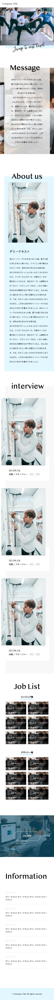
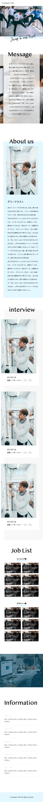

／
私はこんな人です
＼
／
こんなことやものが好きです
＼
＃音楽フェスに参加してアウトドア気分を味わうこと ＃好きなアーティストのライブに行くこと ＃MAN WITH A MISSION ＃Tim Hortons（カナダのドーナツチェーン） ＃某漫画アプリの無料チケットを日々追いかけ中 ＃WEBデザイン・コーディングに関する勉強 ＃旅行 ＃インテリアを眺める・家の整理整頓や収納を考えること ＃写真を撮って思い出を形に残すこと ＃英語を話すこと ＃これまで出会って仲良くなった友達や、尊敬する上司・先輩
＼ 私はこんな人です ／
＼ こんなことやものが好きです ／
＃音楽フェスに参加してアウトドア気分を味わうこと ＃好きなアーティストのライブに行くこと ＃MAN WITH A MISSION ＃Tim Hortons（カナダのドーナツチェーン） ＃某漫画アプリの無料チケットを日々追いかけ中 ＃WEBデザイン・コーディングに関する勉強 ＃旅行 ＃インテリアを眺める・家の整理整頓や収納を考えること ＃写真を撮って思い出を形に残すこと ＃英語を話すこと ＃これまで出会って仲良くなった友達や、尊敬する上司・先輩

 
